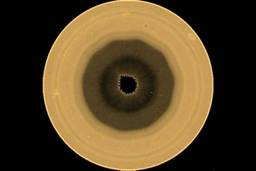

ナゾロジー
https://nazology.kusuguru.co.jp
身近に潜む科学現象から、ちょっと難しい最先端の研究まで、その原理や面白さを分かりやすく伝えられるようにニュースを発信していきます。最新の科学技術やおもしろ実験、不思議な生き物を通して、もう一度、皆さんの心にナゾを解き明かす「ワクワクの火」を灯したいと思っています。
フィード
人類は賢くなるにつれ心が壊れていったようだ 23
23
ナゾロジー
オランダのアムステルダム自由大学（VU）を中心とする国際研究チームの最新研究により、人類が賢く進化する過程で、心の不調につながる遺伝子の変化が現れたことが明らかになりました。 研究では、約500万年にわたる人類の進化の歴史を遺伝子レベルで細かく調べられており、流動的知性（未知の問題を解決する力）と呼ばれる知能の遺伝子変異が約50万年前に現れ、その後を追うように、精神疾患のリスクを高める遺伝子変異が約47.5万年前に現れたことが示されています。 つまり、人類の歴史では「頭の良さ」と「心の不安定さ」という、一見すると正反対の特徴が、まるでセットのように順番に出現してきたことになります。 このことは「人類は高度な知能を手に入れる代わりに、精神的な弱さという代償を払ったのではないか？」という問いを私たちに投げかけています。 人類の知能は精神不調と引き換えだったのでしょうか？ 研究内容の詳細は20…
5時間前
『便秘は食物繊維でOK』ではなかった：最新分析で「効く食品」を精査 39
ナゾロジー
イギリスのキングス・カレッジ・ロンドン（KCL）の研究チームが行った最新の研究によって、これまで便秘のケアとしてよく言われてきた「便秘ならとりあえず食物繊維と水分をたっぷり摂れば良い」という常識が、実は科学的な裏付けが不十分なまま広まっていたことが分かりました。 研究では世界中の75件もの便秘改善に関する研究データを徹底的に調べ直し、その結果、その結果、「食物繊維ならなんでも効く」というわけではなく、効果がしっかり認められた食品やサプリは限られていることが明らかになったのです。 具体的には、オオバコ由来の繊維（サイリウム）、キウイ、マグネシウムをたっぷり含む硬水などが便秘改善に特に効果が高く、こうした「効きやすい食品や飲み物を科学的に選んで摂ることが大切だ」と研究者たちは結論付けています。 私たちがこれまで信じてきた便秘ケアの「常識」は、本当に見直されることになるのでしょうか？ 研究内容…
6時間前

土星の南極に「十角形」が出現しつつある――1辺が地球に匹敵
ナゾロジー
スペインのバスク大学（EHU）などの研究によって、土星の南極を取り囲む巨大な「十角形」の雲の模様が、いままさに形を整えている途中の姿で見つかりました。 土星の北極には、雲が六角形を描く有名な模様がありますが、南極で同じような多角形が見つかったことはありませんでした。 研究チームのエイミー・サイモン氏（NASAゴダード宇宙飛行センター）は「北極の六角形は40年以上、見るたびにそこにありました。この模様は違います。強まっているように見えるのです」と述べています。 なぜ今になって、しかも六角形ではなく十角形が、南極に生まれたのでしょうか。 研究内容の詳細は2026年9月2日に『Science Advances』にて発表されました。
1日前

全米各地でGPSに10メートル以上の誤差が発生、犯人はオーロラだった
ナゾロジー
アメリカのエアロスペース・コーポレーション（The Aerospace Corporation）などの研究チームは、2025年11月の巨大磁気嵐の夜、オーロラが明るさを増すたびに、その真下でGPSが狂っていたことを突き止めました。 乱れはほぼ東海岸から西海岸に及ぶ帯に広がり、場所によっては位置の誤差が10メートルを超えていました。 誤差を生んだのは、オーロラの下でGPSの電波が星のようにまたたいたことでした。 しかも舞台は、GPSにとっての「安全地帯」とされてきた中緯度です。 論文では、広い経度にわたる中緯度の強いまたたき（振幅シンチレーション）は一度も報告されていないと記述されています。 はるか上空で光っているだけのオーロラは、どうやって地上の電波をまたたかせたのでしょうか。 研究内容の詳細は2026年8月29日に『Geophysical Research Letters』にて発表され…
1日前
AI広告の成功と失敗を分ける要因がみえてきた
ナゾロジー
アメリカのミシシッピ大学（University of Mississippi）で行われた研究によって、AIで作成した動画広告が視聴者に受け入れられるかどうかの要因が、AIを使用した理由や動機、背景などに結びついていることが見えてきました。 AIを使った理由が広告の中身と噛み合っていれば、視聴者はAIを使ったと告げられても評価を落としにくくなっていたのです。 この成果は、AIを活用して広告動画などを作成しようとする企業にとって非常に重要になると考えられます。 研究内容の詳細は2026年7月29日に学術誌『Journal of Interactive Advertising』にて発表されました。
1日前
進撃のキノコ：日本でも人気のキノコが栽培場から脱走し米国で生息地を急拡大
ナゾロジー
アメリカのウィスコンシン大学マディソン校（UW–Madison）で行われた研究によって、日本でも人気の食用キノコ「タモギタケ」が栽培場から北米の森に逃げ出し、倒木に暮らす菌たちの多様性を大きく損なっている可能性が示されました。 研究ではタモギタケの生えている倒木で確認された菌（きのこ）の種類は、生えていない倒木の約半分程度しかなかったことが示されています。 タモギタケは人間にとってはおいしく健康的なキノコですが、森の中では在来の仲間たちを押しのける「厄介者」になっている可能性があります。 しかし栽培場でヌクヌクと育てられてきた食用キノコのどこに、こんなにも高い侵略能力があったのでしょうか？ 研究内容の詳細は2025年7月16日に『Current Biology』にて発表されました。
2日前
承認欲求というのは存在しない
ナゾロジー
SNSで「いいね！」を集めるのは、ただの自己顕示なのか？ それとも「承認欲求が強い」からでしょうか？ 現代の私たちは、日常的に「承認欲求」という言葉を耳にします。 SNS上で自分の投稿に反応がほしい、フォロワーを増やしたい、誰かに認められたい――そんな思いは、ごく当たり前の感情に思えます。 ところが、この「承認欲求」という概念が本当に存在するのかと問われると、意外にも答えは複雑です。 実は、承認欲求という言葉が盛んに使われるようになったのはごく最近のことであり、その背後には人類史の闇とも言える「血塗られた歴史」が深く関係しているのです。 今回のコラムは、あえて「承認欲求は存在しない」というタイトルから、人類の狩猟採取時代にまでさかのぼり「仲間殺し」という死因がいかに私たちの脳を変えてきたかを探っていきます。 実は、仲間に殺されるリスクを回避するために、私たちの脳は噂話や他者評価に過剰に敏…
2日前
「超オス」の放流開始から6年で、メスの根絶に成功──外来マス排除に世界初成功
ナゾロジー
アメリカのアイダホ州魚類狩猟局（IDFG）などで行われた研究によって、「オスしか生まない超オス（YYオス）」を放流し続けた2つの川から、外来種ブルックトラウトのメスが完全に消えたことが確認されました。 魚を増やすための放流で、狙った魚を根絶する。 この逆転の発想が実際の川で血筋を断つところまで通用したのは、今回が初めてです。 論文では、電気ショックによる駆除と超オスの放流を組み合わせれば、管理上意味のある年数でブルックトラウトを根絶できることを初めて確認した、と記述されています。 しかしオスだらけになった川で、生き残った魚がメスに性転換して巻き返す抜け道はなかったのでしょうか。 研究内容の詳細は2026年7月24日に『Transactions of the American Fisheries Society』にて発表されました。
3日前
世界で最も飲まれる糖尿病薬は腸を「糖の浪費家」にしていた
ナゾロジー
アメリカのノースウェスタン大学（NU）で行われたマウス実験によって、糖尿病治療薬メトホルミンが血糖値を下げている主な舞台は、長く信じられてきた肝臓ではなく「腸」であることが示されました。 この薬は腸の内側をおおう細胞にたまり、その細胞のエネルギー生産を鈍らせます。 エネルギーが足りなくなった細胞は、血液中の糖をかき集めて燃やし始めます。 研究を率いたナブディープ・チャンデル氏は「メトホルミンは事実上、腸が血流から糖を吸い出すのを助けている」と述べています。 では、世界中で何百万人もが毎日飲んでいる薬の効きどころが、なぜ今になってようやく突き止められたのでしょうか。 研究内容の詳細は2026年5月8日に『Nature Metabolism』にて発表されました。
3日前
音波だけで飛行する超小型ロボットを開発
ナゾロジー
スイス連邦工科大学ローザンヌ校（EPFL）で行われた研究によって、モーターも電池も積んでいない砂粒ほどの飛行体が、音を当てられただけで宙に舞い上がりました。 重さはわずか150マイクログラム、動く部品はひとつもありません。 音で物を浮かせる技術は以前からありますが、この機体は浮かされているわけではありません。 浴びた音を自分で推進力に変えて、飛び立っているのです。 研究を率いたセルマン・サカール氏は「音波で装置を押し回すのではなく、特定の高さの音をとらえ、それを向きの定まった推進力と制御された動きに変える装置を作りました」と述べています。 中身がただの空洞でしかない機体は、どうやって自分を持ち上げる力を生み出したのでしょうか。 研究内容の詳細は2026年8月12日に『Science Advances』にて発表されました。
3日前